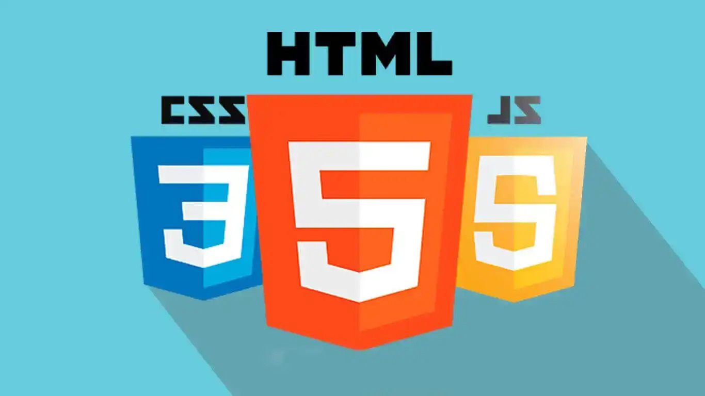

Sobre Mim
Olá, seja bem-vindo ao meu site de portfólio! Meu nome é Emerson e sou apaixonado por tecnologia e programação. Desde jovem, fui fascinado por entender como as páginas web funcionam, quando entrei no curso da Etec "Desenvolvimento de Sitemas" o que me levou a seguir carreira em Análise e Desenvolvimento de Sistemas. Ao longo do tempo, desenvolvi habilidades em criação de páginas web e em entender o funcionamento de programas.
Aqui, você encontrará informações sobre minha formação, meus projetos e como entrar em contato comigo.
Meus gostos:
- Tenho uma paixão pelos animais, principalmente pelos caes e gatos, ja que fui apegado muito a eles
quando era criança
- Quando estive no curso da Etec, admirava bastante a disciplina "desenvolvimento web", ainda mais pelo
misterio da linguagem JavaScript. Foi daí que começou a minha jornada de entender melhor a anatomia web.

- Uma das das interresantes das paginas web, era a interatividade do site ao visita-lo, clicando, ou
pasando mouse em cima. Me intereissei na "magia enigmatica" da alma do site.

Meu passatempo:
- Meu passatempo, as vezes eu leio em casa sobre comandos (Html, Css e Js), e quando sinto mais "leve", eu
saio de casa pra algum lugar.

Missão
Minha missão é criar soluções tecnológicas que melhorem a vida das pessoas e facilitem o acesso à informação, sempre buscando aprender e evoluir como desenvolvedor.
Visão
Busco me tornar um especialista em desenvolvimento web, com foco em criar interfaces intuitivas e funcionais que proporcionem uma experiência agradável aos usuários.
Sonho
Meu objetivo é me empregar numa das maiores e mais inovadoras empresas do mundo, a Google. Atraído pela cultura de inovação, pela ênfase em aprendizado contínuo e pela oportunidade de impactar milhões de pessoas globalmente, vejo na Google o ambiente ideal para aplicar minhas habilidades em desenvolvimento de software e contribuir para projetos que realmente fazem a diferença no mundo.